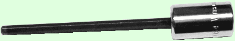
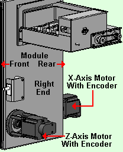
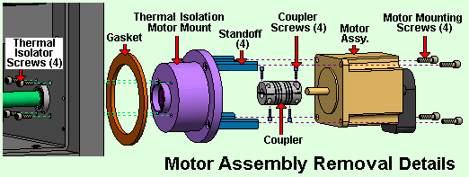
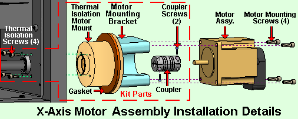
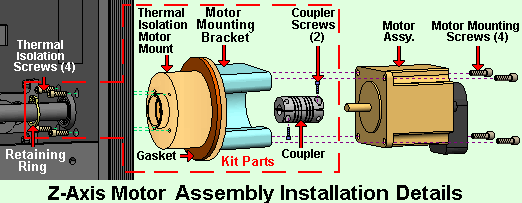
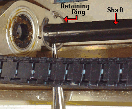
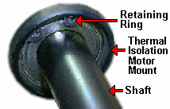
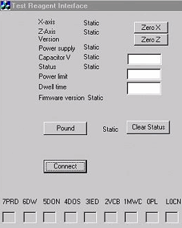

Replacing Gripper Motor Couplers
This procedure describes how to replace the drive motor couplers on the reagent storage module gripper.
- Pliers - internal retaining ring
- Torque wrench - 0 to 75 in-lb (0 to 9 N•m), 1/4-in drive
- Hex socket - 2.5-mm hex bit in 1/4-in drive socket (PN A54656).

- Motor Coupler Mounting Assy:
- Bracket, motor mounting
- Thermal isolation motor mount
- Gasket
- Insulation (installed in thermal isolator)
- Thermal isolation motor mounting screws (4)
- Stainless steel coupler with screws (2)
Replace the drive motor couplers on the reagent storage module gripper when the x- or z-axis motor is mounted on the original standoffs and the motor-to-shaft flexible coupler is damaged or broken.
Gripper motor locations:

Module removal requirements:
| To replace the coupler on this motor | The reagent storage module |
|---|---|
| X-axis | must be removed |
| Z-axis | does not need to be removed |
- Remove the cover on the reagent storage module.
-
Unload and refrigerate the reagent packs.
- Select Supplies > Reagent Supplies > Unload all Reagent Packs.
- When the load tray opens with packs, remove them.
- Place the removed packs into refrigerated storage.
-
If replacing the coupler on the x-axis motor, remove the reagent storage module.
Note: Refer to the RS: Removing Reagent Storage Module procedure.
-
Remove the x-axis or the z-axis coupler.

- Cut the tie-wrap securing the motor and encoder wires to the motor standoff.
- Remove the four screws attaching the motor to the standoffs. It might be necessary to hold the standoffs to prevent them from rotating while removing the screws.
- Loosen the screws securing the coupler to the shaft.
- Remove the motor.
- Remove and discard the coupler.
-
Remove the four screws securing the thermal isolation motor mount to the reagent storage module from inside the module.
Removing pack nest 50 can allow better access to the x-axis screws on the thermal isolation motor mount.
- Remove and discard the thermal isolation motor mount, the standoffs, and the screws.
-
Install the x-axis coupler.

-
Install the new thermal isolation motor mount and standoff and tighten the screws securely.
The opening of the new standoff should face the right side of the reagent storage module.
- Slide the replacement coupler onto the x-axis shaft, but do not secure the coupler.
- Attach the motor to the standoff.
-
Position the coupler so that it is centered between the motor and the shaft bearing.
The holes at each end of the coupler have different diameters. The hole with the smaller diameter fits the motor shaft.
- Use the torque wrench with the 2.5-mm hex attachment to tighten the 2.5-mm hex screws on the coupler to 20 in-lb.
-
Install the new thermal isolation motor mount and standoff and tighten the screws securely.
-
Install the z-axis coupler.

-
Slide the left end of the shaft out of the mount and the gripper slide. Slide the retaining ring onto the shaft from the left end. Slide the left end of the shaft into place. Slide the retaining ring down towards the right end of the shaft close to the thermal isolation motor mount.

Note: The retaining ring is only used for the z-axis shaft. If it is possible to distinguish a flat surface and a sharp edge on the retaining clip, install the clip with the flat surface facing into the reagent storage module. Leave the retaining ring resting on the shaft. The retaining ring will be installed later. -
Install the new motor isolator and standoff and secure the screws.
Note: The opening of the new standoff should face the front side of the reagent storage module.
-
Hold the shaft so that the bearing on the right end of the shaft protrudes through the thermal isolation motor mount. Install the retaining clip using a retaining ring pliers.
Confirm that the clip is seated in the groove on the interior surface of the thermal isolation motor mount. Make sure that the left end of the z-axis shaft remains in position while performing this step.

- Slide the replacement coupler onto the z-axis shaft, but do not tighten the coupler.
- Attach the motor to the standoff and tighten the screws securely.
-
Position the coupler so that it is centered between the motor and the shaft bearing.
Note: The holes at each end of the coupler have different diameters. The end with the smaller diameter goes toward the motor shaft.
- Use the torque wrench with the 2.5-mm hex attachment to tighten the two 2.5-mm hex screws on the coupler to 20 in-lb.
-
Slide the left end of the shaft out of the mount and the gripper slide. Slide the retaining ring onto the shaft from the left end. Slide the left end of the shaft into place. Slide the retaining ring down towards the right end of the shaft close to the thermal isolation motor mount.
-
Install the reagent storage module.
Note: Refer to the RS: Installing Reagent Storage Module procedure.Leave the reagent storage module cover off to perform the alignments.
-
Open a connection between the console PC and the AU.
For Windows XP:
-
Press the
[Windows] key, and then select
Start
> Programs > Administrative Tools > Remote Desktop Connection to AU PC to start desktop sharing.
The remote desktop connects to the instrument computer and allows remote control of the instrument and applications. When connected, the Remote Desktop window displays the Windows XP desktop of the instrument.
-
To navigate the AU desktop:
- Use the scroll bars on the right and bottom of the window.
- Move down the scroll bar on the right to see the AU desktop toolbar,
- The PC toolbar is at the bottom of the screen.
-
To switch between the console PC display and the AU display:
- To return to the console PC display, use the minimize button at the top of the AUSETUPPC screen.
- To restore the AU Windows screen, select AUSETUPPC Remote Desktop Connection in the toolbar at the bottom of the console PC display.
For Windows 8:
-
Press the
Windows key, type
remote, and open the Remote Desktop Connection program.
The remote desktop connects to the instrument computer and allows remote control of the instrument and applications. When connected, the Remote Desktop window displays the Windows 8 desktop of the instrument.
- Type in 192.168.2.4 into the Computer field and select Connect.
- Enter user for User Name and tech for the password if prompted.
-
If prompted at the RDS warning screen, check the box for "Don't ask me again for connections to this computer" and select
Yes.
Note: For Windows 8, the default console IP address is 192.168.2.3 and the AU IP address is 192.168.2.4. Neither IP address changes during the software load process.
-
To switch between the console PC display and the AU display:
- To return to the console PC display, use the minimize button at the top of the AU Desktop screen.
- To restore the AU Desktop screen, press the Windows key, type remote, and open the Remote Desktop Connection program.
-
Press the
[Windows] key, and then select
Start
> Programs > Administrative Tools > Remote Desktop Connection to AU PC to start desktop sharing.
-
Use SMCTest.exe to move the reagent gripper to the Home position.
-
Select the SMCTest.exe shortcut on the AU desktop to open the SMCTest.exe program.
Note: If there is no shortcut or there is an error opening the application, then look for the program in the C:\AU folder.
- In SMCTest, select ReagentSupplyXMotorEnableHome to home the device in the x-axis.
- Select ReagentSupplyZMotor > Enable > Home to home the device in the z-axis.
- Exit the SMCTest.exe program.
-
Select the SMCTest.exe shortcut on the AU desktop to open the SMCTest.exe program.
-
Initialize the interface PCB.
-
Select the
TestReagentIF.exe shortcut on the AU desktop to open the
Test Reagent program.
Note:
- If there is no shortcut on the desktop or there is an error opening the application, look for the program in the C:\AU folder in the AU hard drive.
- If the shortcut causes an MFC or Dr. Watson error or causes the system to become unresponsive, check that the SPU and main cover switches are closed and MCC power is on. Select the TestReagentIF.exe program in the AU folder (not the desktop shortcut).
-
In
Test Reagent, select
Connect.

- When connected, select Zero X > Zero Z > Clear Status to reset the reagent storage interface PCB.
- Exit the Test Reagent program.
-
Select the
TestReagentIF.exe shortcut on the AU desktop to open the
Test Reagent program.
-
Verify operation of the replaced couplers.
-
Verify alignments of the reagent pipettors to reagents packs.
Note: Refer to the RP: Aligning Reagent Pipettor procedure.
- Install the cover on the reagent storage module (six 5/32-in hex screws).
- Initialize the instrument with Remap selected.
-
From the
Main Menu, select
Diagnostics > Device Diagnostics
> Analog Devices
> Analog Data, and then verify that the reagent cooler temperatures are in specification.
It can take 20 to 30 minutes for temperatures to come into range.
-
Verify alignments of the reagent pipettors to reagents packs.
- Load all the reagent packs that were removed from the storage module.
-
Verify system operation.
-
Perform system verification as stated in the Verification of Service Repair document .
Refer to the Admin: Verification of Service Repair document.
-
Perform system verification as stated in the Verification of Service Repair document .